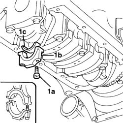
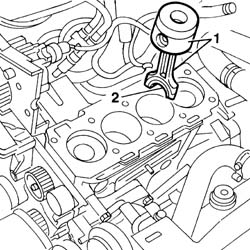
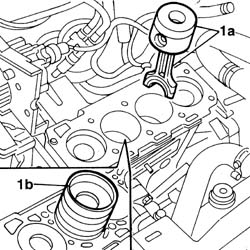

1028H20 piston with connecting rod - r r
- Path
- Procedures > 10 ENGINE > 1028 PISTONS AND CONNECTING RODS > 1028H pistons and connecting rods > 1028H20 piston with connecting rod - r r
- Kind
- repair procedure (removal / refitting; the operation number is the code)
- Applies to
- engines: 1.6 TS, 2.0 TS, 1.9 JTD 8V, 1.9 JTD 16V; all production periods
- Interactive page
- https://sloeber94.github.io/elrnDB-a147/en/#/3024787
Applies to: engines: 1.6 TS; all production periods
 Removing
Removing
 Refitting
Refitting1028H10 connecting rod and piston set - r r bear in mind that only the cylinder concerned is worked on.
Applies to: engines: 1.6 TS; all production periods
Refitting
Removing1028H10 connecting rod and piston set - r r bear in mind that only the cylinder concerned is worked on.
Applies to: engines: 2.0 TS; all production periods
Removing
Refitting1028H10 connecting rod and piston set - r r bear in mind that only the cylinder concerned is worked on.
Applies to: engines: 2.0 TS; all production periods
Refitting
Removing1028H10 connecting rod and piston set - r r bear in mind that only the cylinder concerned is worked on.
Applies to: engines: 1.9 JTD 8V; all production periods
Removing
Refitting1008C10 power unit upper reaction link r r
1016A10 sound-proofing cover - r + r
1008C14 engine link bracket - r r
7055B64 Engine compartment DUST shield in front wheel arch (one), left or right - R.R.
1092G10 single engine belt r r
1092A10 Crankshaft services PULLEY - R.R.
1060G80 ds electric injection control unit - r r
1032B10 toothed timing belt - r + r for timing adjustment or replacement
1016C10 cylinder head - r + r and replace gasket
1076B50 exhaust pipe attachment to engine - r + r
1092G10 single engine belt r r
2710A35 intermediate drive shaft mount - r r
1020A20 crank case oil sump - r + r clean seals for sealant application
1. Undo bolts (1a) and remove big end bearing cap (1b). then remove big end half-bearing (1c).

Applies to: engines: 1.9 JTD 8V; all production periods
Lower the vehicle.
1. Remove the connecting rod with the piston.
2. Remove the big end bearing shell.

Applies to: engines: 1.9 JTD 8V; all production periods
Refitting
Removing1. Fit the connecting rod - piston assembly and half-bearing (1a) using tool (1b).

Applies to: engines: 1.9 JTD 8V; all production periods
Fit the big end half-bearing and tighten the cap bolts to torque.
 | Fastening | Component | Ø | Value (daNm) |
|---|---|---|---|---|
- | Bolt | CONNECTING ROD CAP FASTENERS | M9 | 2.5 + 60˚ |
1020A20 crank case oil sump - r + r clean seals for sealant application
2710A35 intermediate drive shaft mount - r r
1092G10 single engine belt r r
1076B50 exhaust pipe attachment to engine - r + r
1016C10 cylinder head - r + r and replace gasket
1032B10 toothed timing belt - r + r for timing adjustment or replacement
1060G80 ds electric injection control unit - r r
1092A10 Crankshaft services PULLEY - R.R.
1092G10 single engine belt r r
7055B64 Engine compartment DUST shield in front wheel arch (one), left or right - R.R.
1008C14 engine link bracket - r r
1016A10 sound-proofing cover - r + r
1008C10 power unit upper reaction link r r
Applies to: engines: 1.9 JTD 16V; all production periods
1028H10 connecting rod and piston set - r r bearing in mind to only work on the cylinder involved.
Topics linked from this page (18)
- 0010T11 engine oil check level and top up
- 0010T20 coolant change
- 0010T21 coolant check density and top up if necessary
- 1008C10 power unit upper reaction link r r
- 1008C14 engine link bracket - r r
- 1016A10 sound-proofing cover - r + r
- 1016C10 cylinder head - r + r and replace gasket
- 1020A20 crank case oil sump - r + r clean seals for sealant application
- 1028H10 connecting rod and piston set - r r
- 1032B10 toothed timing belt - r + r for timing adjustment or replacement
- 1060G80 ds electric injection control unit - r r
- 1076B50 exhaust pipe attachment to engine - r + r
- 1092A10 Crankshaft services PULLEY - R.R.
- 1092G10 single engine belt r r
- 2710A35 intermediate drive shaft mount - r r
- 4450B04 right front wheel r r
- 5530B10 battery - r+r
- 7055B64 Engine compartment DUST shield in front wheel arch (one), left or right - R.R.